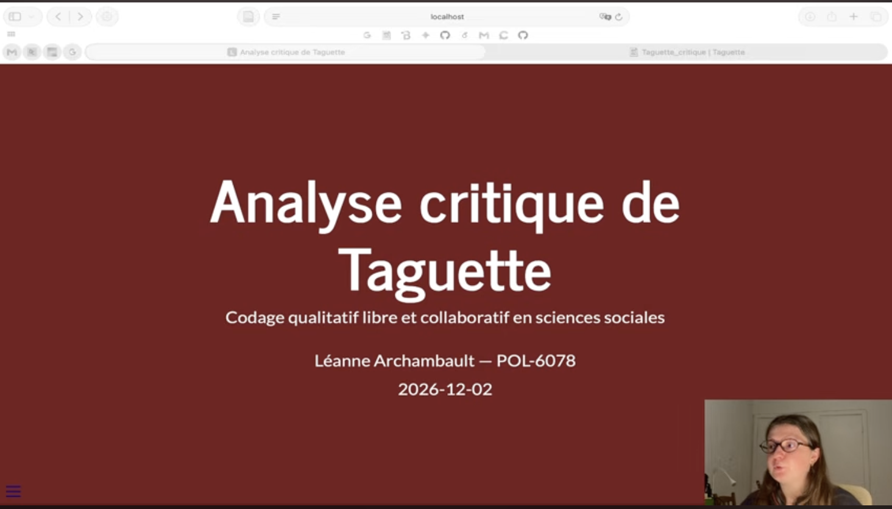
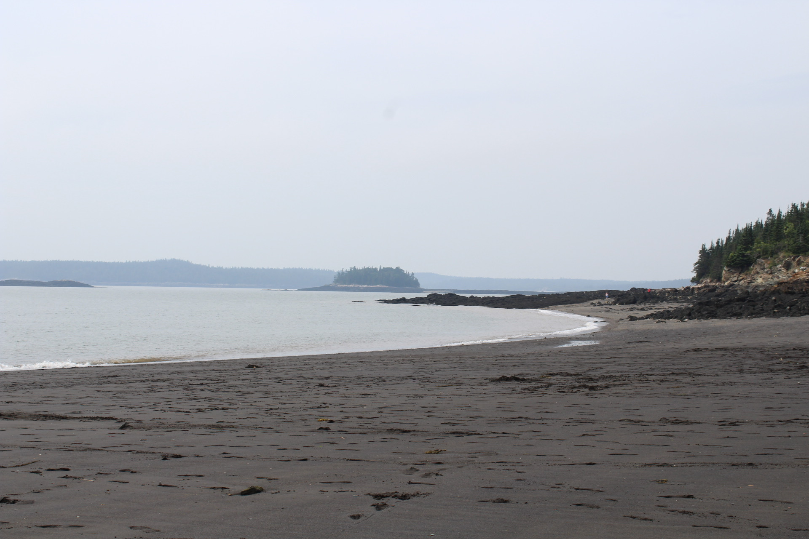

Analyse critique • POL-6078
Analyse critique : Taguette
Capsule scientifique de 5 minutes réalisée dans le cours POL-6078.
Étudiante à la maîtrise en science politique
Auxiliaire de recherche

Étudiante à la maîtrise en science politique
Candidate à la maîtrise en science politique sous la direction d'Alexandre Gajevic Sayegh, je me spécialise dans l'étude des politiques climatiques, de la justice environnementale et de l'action publique au Canada et au Québec. Titulaire d'un baccalauréat en science politique avec mention d'honneur de la doyenne, j'allie rigueur méthodologique, intérêt pour l'analyse de données et engagement dans la recherche universitaire.
Mes principaux intérêts de recherche portent sur la transition écologique, les politiques publiques, les enjeux des communautés autochtones ainsi que le comportement électoral et la participation politique.
Formée aux outils méthodologiques interdisciplinaires et active au sein de plusieurs équipes de recherche, mes champs d'intervention couvrent l'analyse empirique et la vulgarisation scientifique.
Curriculum vitae académique. Vous pouvez le parcourir ci-dessous ou l'ouvrir en plein écran.
Aperçu de mes travaux de recherche, analyses critiques et réalisations méthodologiques réalisés dans le cadre du cours POL-6078.

Capsule scientifique de 5 minutes réalisée dans le cours POL-6078.

Cliquez sur l'image ou sur le lien ci-dessous pour explorer le contenu de ce projet.
Pour toute question sur mes recherches, opportunités d'assistanat ou collaborations académiques, n'hésitez pas à m'écrire.